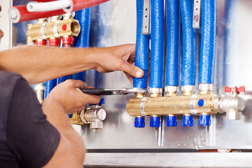
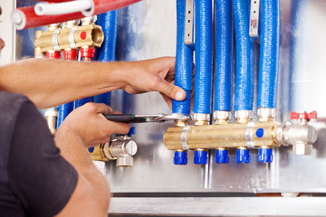

Qu'appelle-t-on désembouage ?
On appelle désembouage l’intervention effectuée sur les circuits de chauffage emboués par des dépôts de boue au fil du temps. Cette technique de nettoyage permet de protéger les installations de la corrosion, d’optimiser le fonctionnement des réseaux et de fluidifier l’eau qui circule dans les circuits de chauffage.
Pourquoi procéder au désembouage de votre système de chauffage ?
À la base, les tuyaux d’un système de chauffage sont envahis par 3 principaux phénomènes dont l’entartrage, la corrosion et les micro-organismes (bactéries) au fil des années et va créer la boue qui va obstruer et affecter le rendement de votre circuit de chauffage ainsi que ses canalisations. Par ailleurs, un embouage important de votre circuit de chauffage impactera aussi votre consommation d’énergie et donc votre facture.

En recourant au désembouage :
- vous évitez de remplacer vos tuyaux et votre radiateur (risque de percement)
- vous évitez une accumulation de dépôts de boue dans votre système d’installation (risque de formation de bouchon dans les tuyaux)
- vous profitez d’une pression d’eau stable
- vous préservez les composants de votre chaudière de l’usure (vase d’expansion, vannes 3 voies, échangeur, corps de chauffe...)
- vous éradiquez les bruits d’air localisées dans vos circuits
- vous bénéficiez d’une consommation de fuel ou de gaz moindre (économie)
- vous tirez avantage d'un système de chauffage fonctionnel et optimal. Par ailleur, cette intervention curative peut amener à détecter des failles dans l'installation et la conception de votre système de chauffe
La provenance des boues infiltrées dans vos circuits
Dans une installation de chauffage, l’embouage peut avoir diverses causes. L’apparition de boues dans un système de chauffage est un phénomène normal qui varie d’un système à un autre. Il faut alors effectuer un désembouage régulièrement pour éviter l’obstruction sévère des tuyaux de canalisations.
Les boues peuvent alors provenir :
- d’une oxydation de métaux (corrosion) qui va créer des dépôts solides comme la rouille. C’est l’oxygène présent dans l’eau qui va attaquer les composants des tuyaux et du système de chauffage
- d’une prolifération de bactéries qui se développent à basse température dans les réseaux des planchers chauffants, mais aussi dans les tuyaux qui n’ont pas été assainis depuis un moment
- d’un entartrage causé par le calcaire dans l’eau. Elle obstrue les canalisations en formant des dépôts qui vont rétrécir le diamètre des canalisations.
Pourquoi faut-il recourir au désembouage ?
 

Pour se prémunir d’éventuels problèmes comme les pannes surprises ou les dysfonctionnements de votre système de chauffage, il est essentiel de procéder à un désembouage régulier. Polyvalents et professionnels, notre équipe peut s’occuper de vos :
- Échangeurs à plaques tubulaires
- Réchauffeurs de piscines
- Radiateurs (alu, fonte, acier)
- Planchers chauffants (PER, acier)
- Chaudières toutes marques
- Pompes à chaleur
À quelle fréquence faut-il faire un désembouage ?
En procédant au désembouage de votre système de chauffage et de vos canalisations régulièrement, vous pérennisez et optimisez vos appareils de chauffage. La fréquence pour effectuer un désembouage varie d’un réseau à un autre.
De manière générale, une installation devrait subir un désembouage tous les 10 à 15 ans. Il n’est pas nécessaire de l’effectuer tous les ans.
Cependant, des facteurs pertinents peuvent révéler que vos canalisations sont chargées en boue et que votre chaudière ne fonctionne pas comme il le faudrait : un radiateur qui ne chauffe pas bien, des pannes de chaudière à répétition, une hausse de votre facture énergétique, une tuyauterie bouchée, des variations de pressions... Par ailleurs, une intervention en plomberie requiert aussi un contrôle de la qualité de l’eau et une vidange du réseau.
Il est porté à votre attention que tous les réseaux constitués d’eau et de métal sauront amenés tôt ou tard à être désembouer.
Comment effectue-t-on un désembouage ?
Généralement, les professionnels du désembouage effectue leur intervention sur trois étapes. Malgré le fait que les installations différent d’une habitation à une autre, que le degré de boues présentes dans les canalisations varient aussi d’une zone à une autre, le désembouage consiste à un nettoyage entier et complet du circuit de chauffage et comprend 3 étapes essentielles :
Un produit chimique fluidifiant à injecter : elle consiste à dissoudre et à décrocher les particules de boue qui se sont accrochés aux parois des tuyaux et des radiateurs. Cette injection homogénéise et débouche les circuits de votre chauffage.
Un rinçage par pression de la boue : cette seconde étape s’effectue sur chaque composant via un appareillage spécifique qui rince par une forte pression d’eau.
L'application d'un produit anti-corrosif pour conditionner les circuits : Cette dernière étape est accomplie afin de prévenir la formation de particules de boues dans les réseaux.
Le rinçage hydrodynamique et le désembouage, deux action différentes
Dans un réseaux de chauffage, la présence de boue est le signe qu'il y a une oxydation. et donc de la rouille dans les tuyaux. Cet état nécessite un désembouage complet. Il peut arriver que certains prestataires proposent alors un rinçage hydrodynamique pour "régler le problème" de l'embouage présent dans vos canalisations. Ne vous y trompez pas, il ne s'agit que de la seconde étape d'un réel désemembouage. En plus de ne pas être écologique, le rinçage hydrodynamique implique une consommation d'eau tout les 5 ans et n'inclut pas forcément de produits adaptés pour nettoyer correctement votre système de chauffe
Pour votre information, notez qu'un désembouage doit s'effectuer dans un delai minimum de 3 heures de temps. Cela varie évidemment selon l'ampleur de l'embouage. Seul un spécialiste saura faire le nécessaire pour nettoyer en entier vos canalisations et ainsi préserver vos appareilles de chauffage.
Contactez-nous au 01 69 25 77 54